Shape morphing without self-crossing twists: landmark-anchored arc-length correspondence vs vertex-index interpolation FAQ
Understand in 3 minutes why vector shape transitions twist into bow-ties mid-morph, and reproduce a zero-crossing landmark-aligned pantograph bench in 10 minutes.
中文 · Interactive Demo · Measured 7-Card Report
① 📌 Executive Summary
- Interpolating closed contours by raw vertex index twists the shape whenever their starting seams (
vertex[0]) disagree. When two independently authored SVG / Lottie paths have a cyclic starting offset (here $\Delta = 11$ out of 24 stations, or $165^\circ$), pairing $\mathbf{a}_i \to \mathbf{b}_i$ forces every vertex to travel across the interior center. - Cyclic landmark alignment reduces non-adjacent edge self-intersections from 12 to measured 0. Recovering optimal cyclic shift $\Delta^* = 11$ reduces squared chord transport energy from
388.23 u²to6.20 u²(98.4%reduction); across all 101 morph steps $\alpha \in [0, 1]$, aligned interpolation maintains0edge crossings, whereas the raw-index baseline produces12crossings at $\alpha = 0.5$ and collapses signed area by over90%. - $O(N)$ fundamental Fourier phase alignment matches $O(N^2)$ exhaustive cyclic-shift search with
0vertex discrepancy. Across 8192 contour morphs on Node CPU, the fast probe path takes51.21 msmedian versus130.65 msfor exhaustive shift and all-pairs segment scanning (while at the tiny 128-query tier both take ~1.4 ms, showing why small-batch timings must be reported honestly). - 61-solid mechanical pantograph bench, 13 local acceptance checks. Scene geometry is
synthetic; contour correspondence, intersection counts, and Node CPU timings aremeasured;OmniLottie/LayerTracerneural vector generation and genus-changing topology splits arenot_measured.

Daily capability direction check: CVPR 2026 paper OmniLottie: Generating Vector Animations via Parameterized Lottie Tokens (arXiv:2603.02138, submitted 2026-03-02) and LayerTracer: Cognitive-Aligned Layered SVG Synthesis via Diffusion Transformer (arXiv:2502.01105, v3 updated 2025-08-13) advance automated layered SVG and Lottie animation synthesis. Whenever closed vector contours morph between keyframes, arc-length stationing and cyclic seam alignment remain the geometric prerequisites for preventing self-intersecting twists. Verified 2026-11-10; this demo implements deterministic contour alignment and intersection auditing without running neural vector models.
② 🎯 Architect & Client Q&A
Q1 When should we choose multimodal vector generation models vs deterministic landmark correspondence?
Evaluate multimodal vector synthesis models (OmniLottie, LayerTracer) when generating layered SVG illustrations or Lottie icon animations from text and image prompts.
Use deterministic arc-length parameterization and cyclic landmark alignment when morphing between two specific architectural nodes, UI cards, or CAD cross-sections where topological integrity (0 self-intersections and smooth area progression) must be guaranteed across every scrubbable frame.
Q2 Under what constraints is landmark-aligned correspondence strictly superior to raw vertex indices?
Whenever source and target contours are exported from different drawing tools, boolean path operations, or stroke starting points, their vertex[0] indices will not share the same polar angle.
Raw vertex-index interpolation (raw-index) blindly connects a[i] to b[i], sending vertices along long interior chords that cross each other near $\alpha = 0.5$. Solving for the cyclic shift $\Delta^*$ that minimizes total squared chord distance eliminates this artificial rotational twist while preserving vertex identity.
Q3 How does fundamental harmonic phase alignment find the exact cyclic shift in a single pass?
Given $N = 24$ counter-clockwise contour stations $z_k = x_k + i y_k$, an exhaustive search tests all $N$ cyclic shifts and checks all $O(N^2)$ non-adjacent edge pairs for intersection.
Instead, treat the closed contour as a discrete complex signal and compute its first Fourier harmonic phasor in one $O(N)$ pass:
$$Z_1(P) = \sum_{k=0}^{N-1} (x_k + i y_k) e^{-i \frac{2\pi k}{N}}$$
A cyclic index shift of $\Delta$ stations rotates $Z_1(B)$ by $-\frac{2\pi \Delta}{N}$ radians relative to $Z_1(A)$. Taking the phase difference $\arg Z_1(A) - \arg Z_1(B)$ and rounding to the nearest integer index modulo $N$ recovers the exact optimal shift $\Delta^* = 11$ in $O(N)$ time, matching the exhaustive search with zero error.
Q4 How can I reproduce this in 10 minutes?
- Run
npm run devand open/demos/contour-correspondence-bench/, initialized at midpointα = 0.50and authored shift11. - In
landmark-alignedmode, verify that the solver appliesshift Δ = 11, producing a smooth 24-bar star contour withcrossings = 0and area13.43 u². - Switch to
raw-indexmode atα = 0.50: observe the pantograph bars twisting across the center with12self-intersections and area collapsing to0.50 u². - Adjust Authored shift (
0–23), Lobe depth (0.1–0.65), and Target scale (1.4–2.6); enter an invalid shift such as30to verify atomic rejection and state retention. - Click
Export morphto downloadCONTOUR_CORRESPONDENCE_SPEC.jsonwithoptimalShift,transportCost,signedArea, andselfIntersections. - Run
npx vitest run tests/contour-correspondence.test.ts, then build and runnode scripts/benchmark-contour-correspondence.mjsagainst a port 4335 preview server.
③ 🧭 Visual Diagrams
④ 📊 Architect Decision Matrix
| Criterion | Raw Vertex-Index Interpolation (raw-index) |
Landmark-Aligned Correspondence (landmark-aligned) |
Implicit SDF Level-Set Morphing | Multimodal Vector Synthesis (OmniLottie / LayerTracer) |
|---|---|---|---|---|
| Midpoint edge self-intersections ($\Delta=11$) | Measured 12 non-adjacent crossings |
Measured 0 crossings across all 101 steps |
0 crossings (via isocontour extraction) |
Depends on generated control-point ordering |
| Squared chord transport energy | 388.2302 u² (interior-crossing chords) |
6.2047 u² (98.4% lower transport energy) |
Does not preserve discrete vertex IDs | Not a pairwise correspondence solver |
| Midpoint ($\alpha=0.5$) signed polygon area | Collapses to 0.50 u² |
Retains 13.43 u² smooth progression |
Smooth area, requires per-frame meshing | N/A |
| Persistent vertex identity for SVG/DOM | Preserves IDs but twists geometry | Preserves 24 stable, semantically aligned IDs | Loses vertex identity on every frame | Outputs tokenized Lottie commands |
| Best architectural role | Same-source path tweaks with fixed seam | Diagram node morphs, UI state transitions, CAD lofting | Droplet merging & genus-splitting shapes | Prompt-to-SVG/Lottie asset generation |
Quantitative example: With $N = 24$ stations and an authored cyclic shift of 11 stations ($165^\circ$), raw-index interpolation incurs 388.2302 u² of squared chord transport, collapsing midpoint signed area from 11.98 u² down to 0.50 u² with 12 edge self-intersections. Aligning $\Delta^* = 11$ reduces transport energy to 6.2047 u², preserves 13.43 u² midpoint area, and yields 0 self-intersections across all 101 steps.
⑤ 🧪 New Capability Demo & Benchmark Findings (with 7-Card)
Sealed data records 61 3D solids, 24 pantograph vertex stations, 101 sampled morph steps, and exact equivalence between $O(N)$ harmonic phase alignment and $O(N^2)$ exhaustive shift + all-pairs segment intersection scanning (maximum_solver_error = 0).
| Node CPU Contour Morph Queries | Cardinal / Harmonic Probe Median | Exhaustive Shift + Pair Scan Median |
|---|---|---|
| 128 | 1.49 ms | 1.37 ms |
| 1024 | 4.79 ms | 11.25 ms |
| 8192 | 51.21 ms | 130.65 ms |
Each load tier runs 7 alternating repetitions after warmup on Node CPU (excluding WebGL rendering). At the small 128-query tier, runtime jitter makes both medians ~1.4 ms (1.49 ms vs 1.37 ms), whereas at 1024 and 8192 queries the fast path is 2.35× and 2.55× faster respectively.
Measured 7-Card Report (EN) · 中文七卡. Scene geometry is synthetic, correspondence and intersection checks plus CPU timings are measured, and OmniLottie / LayerTracer neural inference and genus-splitting morphs are not_measured.
⑥ 🛠️ Architect Checklist
- Normalize winding order (both counter-clockwise) before morphing any two closed contours so signed area never inverts.
- Resample source and target contours to an equal number of stations ($N = 24$) parameterized by normalized arc length.
- Solve for the optimal cyclic shift $\Delta^*$ minimizing $\sum |\mathbf{a}i - \mathbf{b}{(i+\Delta)\bmod N}|^2$ instead of trusting raw
vertex[0]indices. - Audit non-adjacent edge pairs across $\alpha \in [0, 1]$ to verify
0self-intersections throughout the transition. - Check midpoint ($\alpha = 0.5$) signed polygon area to catch antipodal collapse early.
- Reject out-of-range shift or shape parameters (
authorShift = 30) atomically while retaining valid state. - Verify that forward and reverse $\alpha$ scrubbing produce identical pantograph pin world matrices.
- Switch to implicit SDF level-set interpolation when topology changes (e.g., one loop splitting into multiple islands).
- Report both small-tier (
128) and large-tier (8192) CPU medians honestly without hiding small-batch noise. - Label unexecuted multimodal vector generation models (
OmniLottie/LayerTracer) explicitly asnot_measured.
Primary sources: OmniLottie (arXiv:2603.02138) (CVPR 2026, submitted 2026-03-02) generates vector animations via parameterized Lottie tokens; LayerTracer (arXiv:2502.01105) (v3 updated 2025-08-13) synthesizes cognitive-aligned layered SVGs via a Diffusion Transformer. Verified 2026-11-10; this demo is an original deterministic contour correspondence workbench and does not run those neural models.